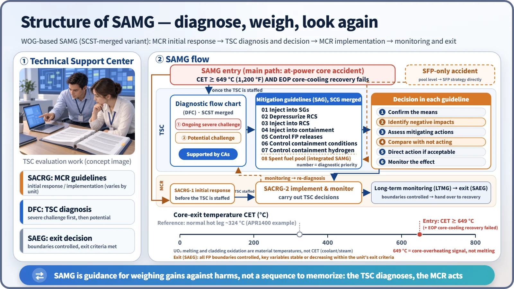
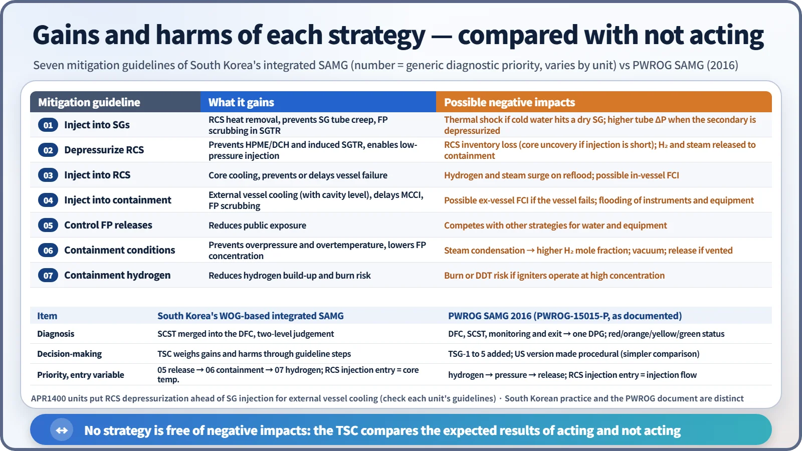
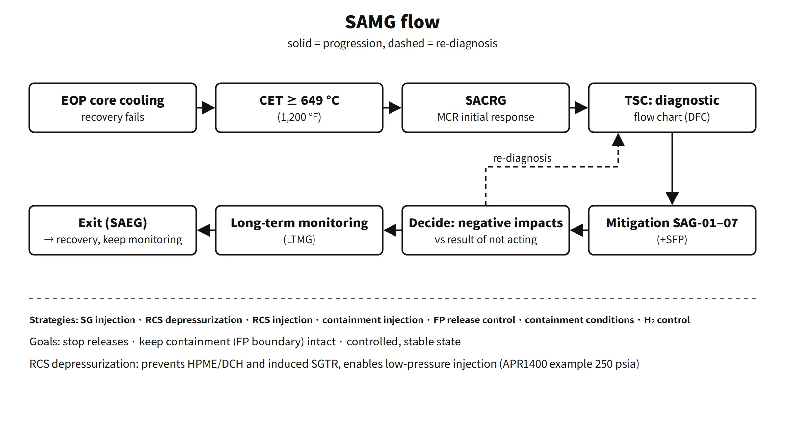

Accidents, Safety Analysis & Severe Accidents · C-SA-023
Severe Accident Management Guidelines (SAMG) — Entry, Diagnosis, Mitigation Strategies, Exit and Negative-Impact Evaluation
Judgement-based guidance in which the TSC diagnoses, weighs each strategy against the consequences of not acting, and the control room carries out the decision.
Severe Accident Management Guidelines (SAMG) are judgement-based guidelines that let the emergency response organization diagnose, evaluate and choose how to use the available equipment once core damage has begun, in order to stop the progression of damage, maintain containment integrity, minimize radioactive releases and return the plant to a controlled, stable state.
If EOPs are directive procedures followed in a fixed order, SAMG is guidance that weighs the benefit and the side effects of each strategy. After core damage the instrumentation is uncertain, most actions carry both gains and losses, and accident progressions vary so much that the order cannot be fixed in advance.
Principle and mechanism
How it was developed — the WOG structure, integrated for South Korea
After TMI-2 the United States set out the five elements of accident management in SECY-89-012 (strategies, decision-making framework, instrumentation and equipment, guidelines and calculational aids, training), and the owners groups for each reactor type produced generic SAMGs (WOG 1994). In South Korea, KAERI developed a generic SAMG for the Korean Standard Nuclear Plant in 1999 and adopted the WOG structure; after the 2001 "Severe Accident Policy for Nuclear Power Plants" it was applied to every unit. Since Fukushima, plants use an integrated SAMG that adds shutdown/low-power and spent fuel pool (SFP) strategies.
Structure of the South Korean SAMG
| Component | Role |
|---|---|
| Control-room guidelines (SACRG-1, SACRG-2) | Initial response before the TSC is staffed / implementing and monitoring TSC decisions afterwards |
| Diagnostic flow chart (DFC) | The TSC checks variables in a set order and selects which mitigation guideline to perform |
| Mitigation guidelines (SAG-01 to 07, mitigation-08) | Means, negative impacts and decision for each strategy |
| Long-term monitoring (LTMG) and exit (SAEG) | Monitoring of long-term concerns; exit decision and recovery information |
| Calculational aids (CA) | Calculations for decisions, such as injection flow and hydrogen flammability |
The original WOG version separates the DFC from the severe challenge status tree (SCST), and the mitigation guidelines (SAG) from the severe challenge guidelines (SCG). South Korea merged the SCST conditions into the DFC and absorbed the SCGs into the SAGs, adding a step inside each SAG that checks whether a severe challenge setpoint has been exceeded. The DFC judges at two levels, "potential challenge" and "ongoing severe challenge", with the severe challenge taking precedence.

Entry — core-exit temperature 649 °C
At power, the plant transfers to SAMG when the core-exit temperature (CET) rises to 649 °C (1,200 °F) or more and the EOP actions to restore core cooling have failed. The Korean standard EOP transfers from its recovery procedure (core and RCS heat removal); the Westinghouse ERGs transfer from FR-C.1. 649 °C is not a melting temperature but a sign that the core is uncovered and overheating (the UO₂ melting point is about 2,830 °C). At shutdown or low power, if CET cannot be used, core damage is judged from the radiation level in the upper containment. An SFP-only accident enters the SFP strategy directly on a low pool-level condition.
Seven mitigation strategies and their negative impacts

The numbers are the DFC's diagnostic priority; they do not mean every strategy is executed in turn. The order is SG injection → RCS depressurization → RCS injection → containment injection → fission product release control → containment conditions control → containment hydrogen control. APR1400-type plants put RCS depressurization ahead of SG injection to make external reactor vessel cooling (IVR-ERVC) succeed.
Each mitigation guideline reaches a decision in this order: ① confirm the means → ② identify negative impacts → ③ evaluate actions that mitigate those impacts → ④ compare with the consequences of not acting → ⑤ if acceptable, direct the action → ⑥ monitor the effect and long-term concerns. For example, containment spray lowers pressure, but condensing the steam raises the hydrogen mole fraction and can end the steam-inerted condition, so the hydrogen state is checked at the same time.
RCS depressurization — 2021 exam, session 2, Q5
- Purpose: prevent high-pressure melt ejection (HPME) and direct containment heating (DCH) from a vessel failure at high pressure; prevent creep failure of the hot leg or SG tubes by high-pressure natural circulation (induced SGTR); make low-pressure injection sources usable (shutdown cooling and spray pumps, safety injection tanks, mobile pumps).
- Target (APR1400 example): 250 psia (1.72 MPa) or less before vessel failure. This is a different value from the 1.78 MPa DCH criterion used in KINS analyses.
- Means: APR1400 rapid depressurization through the POSRVs (Saeul 1 and 2 discharge to the SG compartment through three-way valves; Saeul 3 and 4 add two ERDV trains); the OPR1000 safety depressurization system (SDS); the pressurizer PORVs in Westinghouse plants; indirect secondary-side depressurization through SG feed plus the atmospheric dump valves; pressurizer auxiliary spray.
- Negative impacts: in a high-pressure accident, manual depressurization amounts to a deliberate LOCA. Without an injection source, the loss of inventory speeds up core uncovery. Hydrogen, steam and fission products are discharged into containment, causing local hydrogen accumulation and pressurization. Hydrogen can surge when the safety injection tanks inject and the core is reflooded. Depressurizing the secondary side raises the differential pressure across the SG tubes.
What it means in a plant
Decision-making in the Technical Support Center (TSC)
When a radiological emergency is declared, the main control room first carries out the initial response strategies. Once the TSC is staffed, its evaluation team diagnoses with the DFC and decides on strategies, and the control room implements those decisions. Simultaneous accidents at several units are included in the command structure. When the APR1400 accident management plan was approved in 2025, the severe accident management goal was maintaining the containment barrier function. The five essential safety functions were hydrogen control, containment depressurization and cooling, RCS depressurization and injection, SG and reactor cavity injection, and fission product release control.
Exit
When all fission product boundaries are under control and the key variables are stable or decreasing within the exit criteria, the SAEG ends SAMG and hands over to the recovery organization. A South Korean example used around the time of the exams was CET below 371 °C (700 °F), dose rate at the site boundary below its criterion, containment pressure below the isolation signal setpoint, and hydrogen below 5 %. At shutdown and low power, an SFP level condition is added.
Expansion after Fukushima and the PWROG SAMG (2016)
After Fukushima, shutdown/low-power and SFP SAMG, MACST mobile equipment and extreme-hazard mitigation guidelines (equivalent to the US FSG and EDMG) were added. In the review of the accident management plans, the effectiveness of the current, largely qualitative SAMG and its consistency with the MACST initiation sequence became issues.
In February 2016 the PWROG issued PWROG-15015-P. It merges the DFC, SCST, long-term monitoring and exit into a single diagnostic process guideline (DPG). Variable worksheets are flagged red, orange, yellow and green, and red is dealt with first. The SAGs and SCGs are combined into TSC SAG-3 to 10, and new technical support guidelines TSG-1 to 5 (instrumentation, decision makers, site capabilities, benefit and consequence information, calculational aids) were added. The US version turned the guidance into procedures, simplifying the comparison of gains and losses. Hydrogen reduction was placed ahead of containment pressure control, and the entry variable for the RCS injection strategy changed from core temperature to injection flow. KHNP carried out a project from 2022 to 2025 to develop a DPG-based South Korean SAMG reflecting this. As a short-term improvement, the emergency actions were also revised so that RCS depressurization, injection and cavity flooding are performed first.
Regulatory basis
| Basis | Key point |
|---|---|
| Korea's Nuclear Safety Act, Article 20(2) and Article 21(1)6 | Submission of the accident management plan (including severe accident management) and the licensing criterion |
| Korean technical standard rule, Article 85-21 | Accident management strategies and implementation framework; preparing and maintaining procedures and guidelines |
| NSSC Notice No. 2026-1, Article 7 and Annex 3 | Maintaining the containment barrier after core damage; seven challenge mechanisms |
| "Severe Accident Policy for Nuclear Power Plants" (2001) | Recommended developing and applying SAMG (before it became a legal requirement) |
| SECY-89-012, NEI 91-04 | Five elements of US accident management; voluntary industry SAMG |
| 10 CFR 50.155 (2019), NEI 14-01 | FLEX and EDMG made generic; SAMG remains voluntary |
| IAEA SSG-54 (2019) | Accident management programme; distinct roles of EOPs and SAMG |
When the 2010 and 2014 questions were set, SAMG was implemented voluntarily by the licensee under the severe accident policy. Since June 2016 it has been the implementing document of the statutory accident management plan. At the time of the 2021 exam the applicable notice was No. 2017-34 (challenge mechanisms in Annex 2); the current one is No. 2026-1, Annex 3. The United States included mandatory SAMG in its 2015 proposed rule and then dropped it from the final rule.
Easily confused pairs
| EOP | SAMG | Accident management plan | |
|---|---|---|---|
| Scope | DBAs and multiple failures before core damage | After core damage | The whole range of accident management |
| Form | Directive procedure | Judgement-based guideline | Statutory licensing document |
| User | Control-room operators | TSC (+ initial response in the control room) | Licensee → approved by the NSSC |
| Goal | Prevent core damage | Keep containment intact, minimize releases | Demonstrate the risk goals |
The SAMG DFC carries the idea of the CSF status trees over into the period after core damage.
Key points at a glance
- Definition: judgement-based guidelines for stopping damage progression, maintaining containment and minimizing releases after core damage.
- Goals: end releases, maintain the fission product boundaries (containment), reach a controlled stable state.
- Entry: CET ≥ 649 °C (1,200 °F) + failure of EOP core-cooling recovery.
- Structure: SACRG-1 and 2 → TSC DFC (SCST merged) → SAG-01 to 07 (+ SFP) → LTMG and SAEG, CA.
- Strategies: SG injection, RCS depressurization, RCS injection, containment injection, FP release control, containment conditions control, hydrogen control.
- Decision: means → negative impacts → compare with the result of not acting → execute and monitor.
- RCS depressurization: prevents HPME, DCH and induced SGTR; 250 psia (APR1400 example).
- Exit: boundaries stable, variables stable or decreasing (SAEG).
- Basis: Korea's Nuclear Safety Act, Article 20(2); NSSC Notice No. 2026-1, Article 7.
- Trends: integrated SAMG (LPSD, SFP); PWROG 2016 DPG and TSGs.

This is a model answer, not an official solution. It reflects the criteria current as of 2026.
Exam relevance
SAMG has appeared four times in the Korean Professional Engineer (Nuclear Power) exam: 2010 exam, session 1, Q6 (short answer on SAMG); 2014 exam, session 2, Q6 (when SAMG applies, its types and their purposes, and when it ends); 2021 exam, session 1, Q13 (definitions of EOP, SAMG and the accident management plan); and 2021 exam, session 2, Q5 (RCS depressurization in a severe accident: purpose, means and negative impacts). The typical question types are short definitions, the entry–structure–exit outline, and one strategy examined in depth with its negative impacts. For the "types" in the 2014 question, list the seven mitigation guidelines plus the SFP strategy added when shutdown/low-power conditions were integrated; writing the control-room guidelines, the DFC and the exit guideline as a structure is enough.